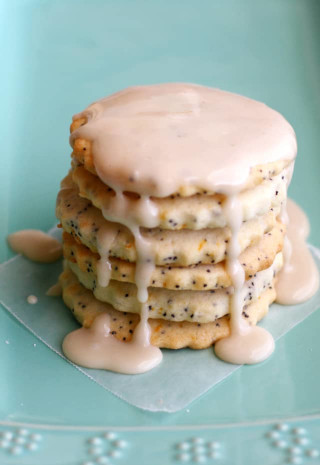

LEMON POPPYSEED COOKIES

INGREDIENTS
for the cookies
- 2 cups gluten free flour
- ⅔ cup vegan buttery spread
- 1 cup organic cane sugar
- 2 tbs unsweetened applesauce
- 2 ½ tbs fresh lemon juice
- 2 tsp lemon zest be careful when you zest the lemon to get only the yellow, not any white!
- 1 tbs poppy seeds
for the glaze
- 1 ½ cups confectioner's sugar
- 1-2 tbs lemon juice or water
INSTRUCTIONS
make the cookies:
- In a large bowl, beat the buttery spread, sugar, applesauce, and lemon juice on medium speed until light and fluffy.
- Add the gluten free flour blend and lemon zest, mix to combine. Add the poppy seeds and mix. (If the dough seems too wet, add a bit more flour. Texture can vary with different gluten free flour blends).
- Divide the dough into two parts, and shape into discs. Wrap the discs with plastic wrap and refrigerate for 2 hours, or freeze for about 30 minutes.
- Preheat oven to 350 degrees F. Line two cookie sheets with parchment paper.
- Lightly flour a rolling pin and rolling surface with gluten free flour. Place the dough on the surface and roll to about a ¼ inch thickness. (If the dough is too cold and stiff, you may have to let it warm up just a little bit before rolling.
- Bake at 350 for 12a-14 minutes.
- Cool for a few minutes on the cookie sheets, then transfer to a wire rack to cool completely.
Make the glaze:
- Sift the confectioner's sugar into a mixing bowl.
- Add the lemon juice, or water, depending on if you want a lemony glaze, or just a sugary glaze, and whisk. If the glaze is too thick, add more liquid.
- Drizzle glaze over cooled cookies.
*note: you can use regular all-purpose flour or white spelt flour if you don't need these to be gluten free.
home